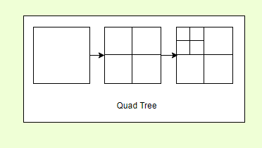

JaDogg's Website
[1] Introduction
I got an idea to come up with set of reusable (technology oblivious) building blocks for system design. Main point is you can either use it diagrams.net (or desktop version), whiteboard or any other tool you like. I use it myself and there's no reason for people other than me to use it. I'm designing this backwards from system design diagrams, so I will come up with multiple system designs and extract common components. Any form of constructive criticism is appreciated as usual.
🤔 Disagreeing for the sake of it is bad, cargo-culting is bad, somewhere middle is probably zen. - Me.
[2] Usage Samples
For usage examples I am planning on trying few system designs of well known software that anyone would be aware of. I'll be diving as deep as I think is necessary to explain my design here. By making myself come up with these designs I achieve two things. First of all I get to see what kind of common components are present in these system designs. I also get to publicly practice system design and expose myself to criticism.
Hopefully constructive criticism.
[2.1] Tinder System Design

I'm up for suggestions. If you got an idea let me know.
in progress
[2.1.1] How to find people close to you?
Main crux of this design is to find a suitable methodology to find people close to you.
We can use Google S3 or Uber H3 - Both are ready-made libraries for this task.
We can use geo-hash prefix matching. This is a human-readable format, and you can easily look at two hashes and if they are closer based on the prefix.
Creating our own library - quad tree.
[2.1.1.1] Quad Tree
This is an important data structure that we can use if we want to come up with this ourselves. Think of this as a structure that allows you to break down a square to four small squares, and you can keep going until it is very small. Internally it is a tree with 4 children.
[2.1.1.2] Querying nearby people
In above design we assumed that we use can find nearby users by simply looking at the profile database. However, we did not dive deep into what we need to ensure that we properly distribute profile data so we do not brown out a single node.
[2.1.1.3] Geo-sharding
Geo sharding is a concept where we map roughly similar user count regions of the world in to different shards of the database. This is a load balancing mechanism and a way to avoid querying a lot of nodes and wasting time. As explained in Tinder blog posts they came up with shards by experimenting and finding out which amount of shards and how it was distributed resulted in good p50, p90 and p99 latency metrics. Example - London can be placed in one geo-shard while most of the Australian desert can also be placed in a single geo-shard. So the actual number of users would impact this rather than surface area on Earth.
Geo-sharding is a form of load balancing.
[2.1.1.4] Matching and likes
For this I'm thinking we can use a queue and set of serverless functions/lambdas to process incoming likes and write that to a database/cache. And we can use another set of lambdas to turn matches to notifications.
System that can spin up on-demand functions and distributed queues are (sub)systems of this system.
[2.1.2] Rest of the system
[2.1.2.1] Authentication and security
For a secure system we need to consider AAA (Authentication , Authorization, and Accounting). However, there is no need to do implement a RBAC (Role-based access control) for end-users of the system. They will all be able to log-in to their own account and use the application. RBAC and full AAA is however important for internal teams and any admin applications used internally.
So from system design perspective something like eventual consistency does not make sense for passwords. Passwords themselves we cannot store in a database like you would with any other data.
OWASP recommend
Argon2idthese days (scryptandPBKDF2-HMAC-SHA512with120kiterations is also sufficient).We can also use
pepperingfor further security.Another alternative is to sign in using email and never store any passwords.
It is also better to avoid coming up with own cryptographical algorithms.
It is perfectly fine to write it yourself for everything else. Having too many dependencies open yourself up to a lot of vulnerabilities.
Getting back to why not eventual consistency, it is because if you change the password - It needs either successfully change everywhere or not change at all. This disallows a bad actor to luck into the system.
We can design authentication as a system as well.
[2.1.2.2] Storing images
For a service such as Tinder images are essential. However, images are not required to find nearby users. It is however essential for users to see other users' images. Therefore, we can use on-disk storage for images and have a reference to it in our profile database. So when a user browse a profile we can get request these images on demand. It make sense to use a distributed file system.
DFS (Distributed file system) is a (sub)system that we use in this system.
[2.1.2.2.1] Caches and power law distribution
Caches or in this case specifically a CDN (Content delivery network) which is also another system on its own can help us scale with the load to access these user images. Let's think of celebrity situation, suddenly a recently divorced famous actor/actress creates a Tinder account. Now everyone wants to look at their images and swipe (whatever side for like). This is a good use-case for a CDN as these celebrity images are now cached.
Since the number of requests for an account is distributed in a power law distribution due to pareto principle. We can assume that the CDN can use a LRU (Least recently used) cache eviction mechanism. This way most recently used image will be kept hot in the cache.
Likes, Money and Followers this all work in a power law distribution, those who have more will always get more.
[2.1.2.2.2] Image formats
Thumbnails for images is essential, and we can use a lossy data format such as JPG for thumbnails. Another good alternative is WebP. Also, PNGs can be used if we need any crisp images, but we can just use JPG for that as well.
Google's WebP format is support across most browsers and platforms these days.
[2.1.2.3] Bibliography
Bibliography for Tinder Design
AAA (computer security). (2022). Wikipedia. Available from https://en.wikipedia.org/w/index.php?title=AAA_(computer_security)&oldid=1068643459 [Accessed 1 July 2022].
Designing Tinder - High Scalability -. (no date). Available from http://highscalability.com/blog/2022/1/17/designing-tinder.html [Accessed 1 July 2022].
Geometry on the Sphere: Google\x27s S2 Library. (no date). Available from https://docs.google.com/presentation/d/1Hl4KapfAENAOf4gv-pSngKwvS_jwNVHRPZTTDzXXn6Q [Accessed 1 July 2022].
GKQuadtree | Apple Developer Documentation. (no date). Available from https://developer.apple.com/documentation/gameplaykit/gkquadtree [Accessed 1 July 2022].
Li, X. (2019). Geosharded Recommendations Part 2: Architecture. Tinder Tech Blog. Available from https://medium.com/tinder/geosharded-recommendations-part-2-architecture-3396a8a7efb [Accessed 1 July 2022].
Pareto principle. (2022). Wikipedia. Available from https://en.wikipedia.org/w/index.php?title=Pareto_principle&oldid=1095743858 [Accessed 1 July 2022].
Password Storage - OWASP Cheat Sheet Series. (no date). Available from https://cheatsheetseries.owasp.org/cheatsheets/Password_Storage_Cheat_Sheet.html#pbkdf2 [Accessed 1 July 2022].
Passwordless authentication. (2022). Wikipedia. Available from https://en.wikipedia.org/w/index.php?title=Passwordless_authentication&oldid=1082243741 [Accessed 1 July 2022].
Power law. (2022). Wikipedia. Available from https://en.wikipedia.org/w/index.php?title=Power_law&oldid=1091370904 [Accessed 1 July 2022].
Ren, F. (2019). Geosharded Recommendations Part 1: Sharding Approach. Tinder Tech Blog. Available from https://medium.com/tinder/geosharded-recommendations-part-1-sharding-approach-d5d54e0ec77a [Accessed 1 July 2022].
Role-based access control. (2022). Wikipedia. Available from https://en.wikipedia.org/w/index.php?title=Role-based_access_control&oldid=1094481919 [Accessed 1 July 2022].
S2 Geometry. (no date). S2Geometry. Available from http://s2geometry.io/ [Accessed 1 July 2022].
Thomson, D. (2019). Geosharded Recommendations Part 3: Consistency. Tinder Tech Blog. Available from https://medium.com/tinder/geosharded-recommendations-part-3-consistency-2d2cb2f0594b [Accessed 1 July 2022].
Tran, J. (2019). Which Image Format for Making Smaller File Size? GretaThemes. Available from https://gretathemes.com/image-format-for-smaller-file-size/ [Accessed 1 July 2022].
UV mapping. (2022). Wikipedia. Available from https://en.wikipedia.org/w/index.php?title=UV_mapping&oldid=1094514074 [Accessed 1 July 2022].
WebP Compression Study. (no date). Google Developers. Available from https://developers.google.com/speed/webp/docs/webp_study [Accessed 1 July 2022].
What is a Quadtree & how is it used in location-based services? (no date). Available from https://www.educative.io/answers/what-is-a-quadtree-how-is-it-used-in-location-based-services [Accessed 1 July 2022].
Whited, S. (no date). Best practices for password hashing and storage. Internet Engineering Task Force. Available from https://datatracker.ietf.org/doc/draft-ietf-kitten-password-storage-04 [Accessed 1 July 2022].
[3] Components
[3.1] Services and related components
[3.1.1] Service

This is used for microservice components. Reason why I put multiple boxes here is to indicate that there are more than one service instance running.
Load balancing for this service is assumed to be dealt with. I do not think there's a reason to draw load balancers, but you can draw it if you wish.
This is different from function/lambda component.
[3.2] Algorithms and data structures
[3.2.1] Quad tree
Quad tree allows you to map a section to four subsections. One good use case is mapping a geographical area.
[3.3] Utilities
[3.3.1] Pros-Cons Box

This is rather simple table to list pros and cons. Use it when you want to compare different technologies of decisions.
Pro - it got pros. Con - it got cons.